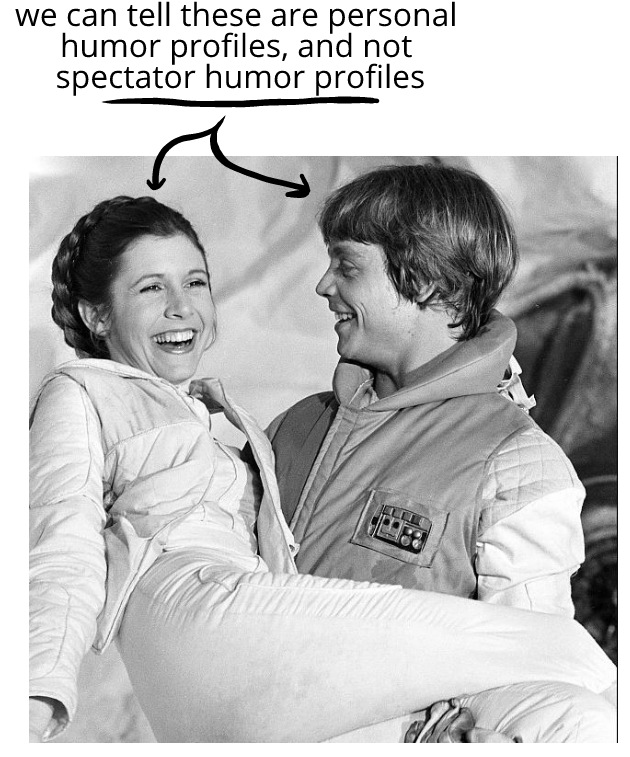
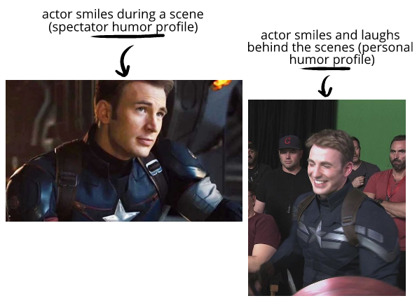
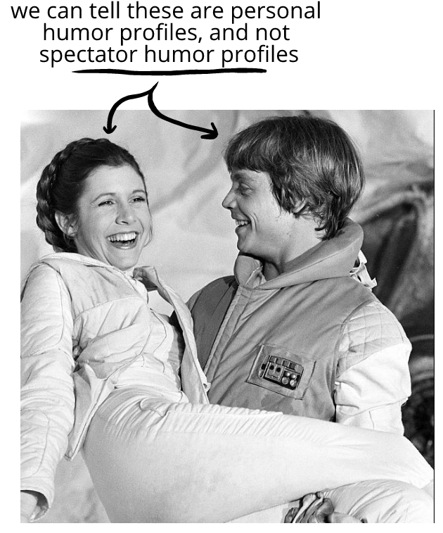
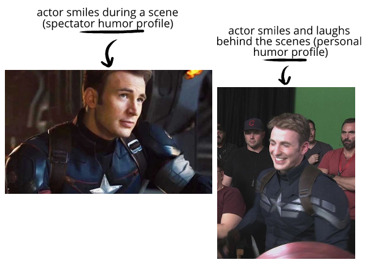

- Most actors can’t convincingly act medium-intensity or higher humor on command. We can watch a video of ourselves doubled over with laughter, and then try to do this perfectly on command—we can't, and actors can't either!
- Laughing can take a long time! In actual conversations with high-intensity humor, laughing takes up a substantial portion of the interaction—which most movies don't want for pacing reasons.
- Our face changes when we give genuine smiles—our skin crinkles, our lips rise toward our nose, our eyes change shape, dimples form, and so on. Some movies have a style of cinematography and editing that rarely lets actors or characters blink, let along squint their eyes when they smile! They're making a choice to subordinate realism for a stylistic effect.
- In some kinds of spectator entertainment, an intense smile can strike us as unusual or come off as unappealing. In this case, what feels good in our lives doesn't feel as good on a screen.
In the emotional climax of a series, two friends share a long laugh. The scene is two minutes long, and their their shared laugh during it is 13 seconds long—10% of the scene!
Even though long laughs like this are relatively
For instance:
If we were
But when we’re simply looking at a still picture, the broad smile looks a bit odd. It's not how we're used to confident characters expressing humor.

(and so on)
All of these factors can lead to spectator humor profiles—like a smirk instead of a happy smile—a brief bark of laughter instead of a long trailing laugh—and so on.
For most movies, the emotional